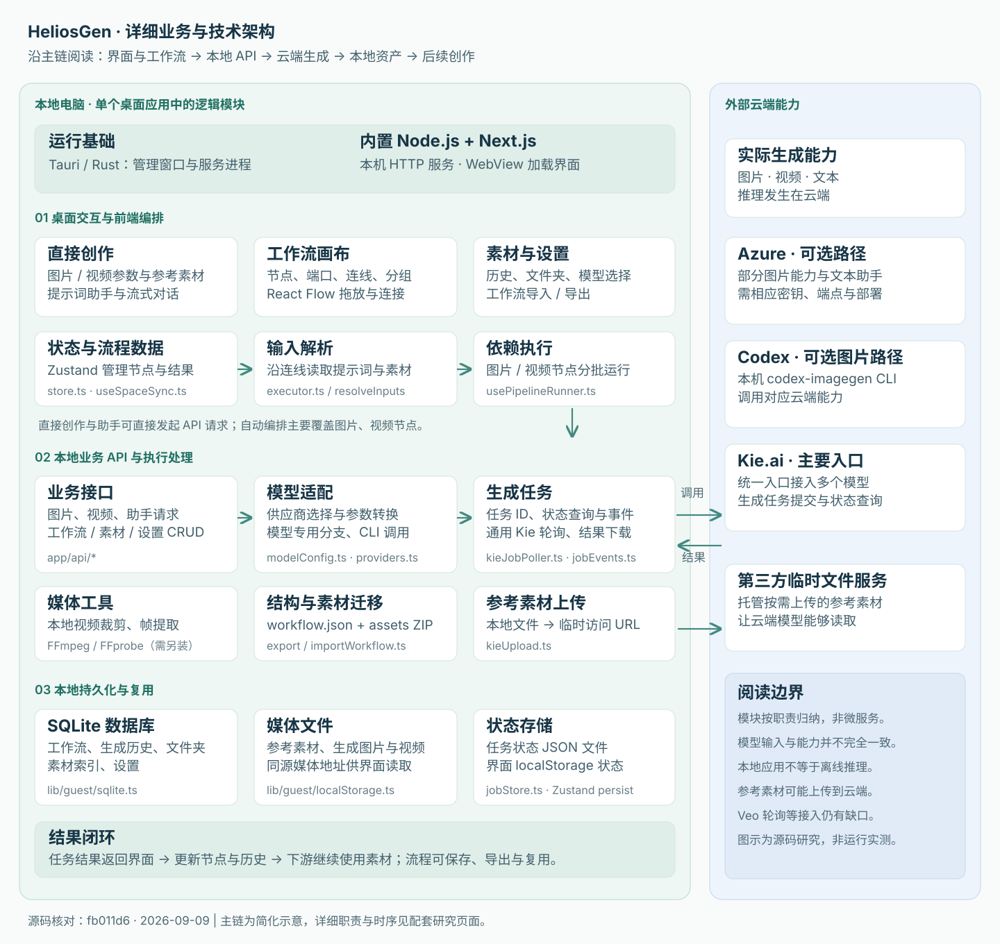

本质：应用层二次开发
它调用现有图片、视频和语言模型，主要开发界面、流程和素材管理。源码中没有看到训练或修改底层模型的实现。
007 / HELIOSGEN
面向图片与视频创作的桌面应用，支持提示词辅助、节点工作流与本地素材管理；通过云端模型 API 适配和依赖调度串联生成任务，减少重复操作、复用创作流程；可扩展更多模型、本地推理、任务恢复、成本控制与行业模板。

01 / POSITIONING
模型提供生成能力，HeliosGen 把这些能力组织成用户可以操作、组合、保存和复用的创作过程。
它调用现有图片、视频和语言模型，主要开发界面、流程和素材管理。源码中没有看到训练或修改底层模型的实现。
界面使用 React / Next.js，经 Tauri 包装为桌面应用。同一云端模型接口也可以被网站调用，网页和 App 的区别主要在交付和运行方式。
从准备输入到生成、保存，再把产出用于下一步。值得借鉴的是业务对象与执行流程如何配合，技术栈本身采用较常见的组合。
02 / CAPABILITIES
这些能力来自当前代码配置与实现；各模型的具体输入、参数和可用性需要分别核对。
| 能力 | 可以完成的操作 | 需要理解的边界 |
|---|---|---|
| 图片生成 | 文生图、参考图生成，多模型、多画幅与质量选择。 | 参考图数量、比例和分辨率由所选模型决定。 |
| 视频生成 | 文生视频、图生视频；部分模型提供首尾帧、动作或多素材参考。 | 参考视频、音频、声音开关等不是所有模型共有的能力。 |
| 提示词助手 | 用语言模型对话、改写提示词，把输出供生成节点使用。 | 助手调用云端文本模型，未纳入图片 / 视频同一自动执行调度。 |
| 可视化工作流 | 拖放节点与连线，将上游输出传给下游；保存并复用创作方案。 | 图片和视频生成节点按依赖分批，同批并行、批间等待。 |
| 素材与历史 | 保存上传素材、生成历史和文件夹，结果可参与后续创作。 | 主要数据在本地；生成使用的参考素材可能需要上传。 |
| 视频辅助处理 | 用 FFmpeg 裁剪视频、提取首尾帧或指定帧。 | 依赖另行安装 FFmpeg / FFprobe。 |
| 工作流迁移 | 将工作流结构和引用的图片、视频一起打包，支持 ZIP 导入恢复。 | 分享的是流程与素材，不包含模型服务访问资格。 |
Nano Banana、Nano Banana 2、Nano Banana Pro、Nano Banana 2 Lite、Z-Image、Seedream 5.0 Lite / Pro、Grok Imagine、GPT Image 2。
Veo 3.1 Lite / Fast / Quality、Gemini Omni Video、Kling 3.0 / Turbo、Grok Imagine / 1.5 preview、Seedance 2.0 / Fast / Mini、Seedance 2.5 / Edit、HappyHorse、MiniMax H3、Motion Control 2.6 / 3.0。
计数是该提交中的配置选项，不是独立模型家族数量，也不代表逐个实测成功。完整模型配置 ↗
03 / BUSINESS OBJECTS
先决定用户的创作过程由什么组成，再让界面、调度、模型调用和存储围绕这些对象协作。
| 业务对象 | 表达什么 | 包含哪些信息 | 为什么独立拆分 |
|---|---|---|---|
| 工作流 | 一套创作方案 | 节点、连线、参数、画布位置 | 将分散操作组织成可保存、可分享的过程。 |
| 节点 | 某一步操作 | 节点类型、输入端口、参数、输出 | 把提示词、资源和生成操作表达成可组合单元。 |
| 连线 | 步骤间的数据关系 | 来源节点 / 端口 → 目标节点 / 端口 | 把参考图、视频帧或提示词传给下一步。 |
| 生成任务 | 某一步的一次执行 | 任务 ID、模型参数、状态、结果或错误 | 把耗时的远程生成与前端操作衔接起来。 |
| 素材资产 | 输入与可复用产出 | 媒体文件、引用地址、索引与文件夹 | 保存创作成果，并让它继续作为下游输入。 |
例如，一套“商品参考图 → 广告主图 → 商品短视频”方案是工作流；两次生成分别由节点描述；连线把主图交给视频节点；每次调用产生任务，生成后的图片和视频成为可复用素材。
04 / ARCHITECTURE
下图按源码职责归纳模块，同时标出本地与云端边界。它们不是独立部署的微服务，也不是已经完全解耦的插件框架。

Tauri 管理窗口和内置 Node 服务的生命周期，WebView 加载本机 Next.js 界面。界面用网页技术编写，用户获得的是桌面应用。
桌面架构 ↗React Flow 提供画布与节点连线；Zustand 管理工作流状态。流程经本地 API 保存，前端状态与持久化配合。
工作流同步 ↗按连线端口读取上游文本、图片、首尾帧和参考视频。生成节点分为多个批次，同批并行，等待本批结束再推进下一批。
输入与依赖解析 ↗生成接口读取模型配置、映射字段并处理不同协议。图片、视频和助手有各自的接口路径，供应商选择与特定模型分支仍存在耦合。
图片生成接口 ↗通用 Kie 任务取得 ID 后由后台轮询；完成后下载结果、更新历史与状态，通过查询或事件流返回界面。不同供应商处理路径有所不同。
任务轮询与结果处理 ↗SQLite 保存工作流、历史、设置和素材索引；媒体写入本地目录。任务状态另有 JSON 文件，部分界面状态保存在 localStorage；工作流可连同素材打包。
数据库结构 ↗把模型 ID、支持的输入、数量限制、比例和质量字段集中描述，驱动界面选项与请求参数。结构相似的新模型较容易接入；新协议和新交互通常还需修改 API 与界面。
生成接口仍有 Azure、Codex 和多个视频模型专用分支；任务结果处理也存在不同路径。适配层在这里是职责概括，不意味着已有统一、可直接安装的插件系统。
05 / EXECUTION
以“商品参考图 → 广告主图 → 商品短视频”为例。下面是可切换的流程示意，不会提交任务、上传素材或调用模型。
01 / 06
06 / SCENARIOS & VALUE
以下场景是基于现有能力的应用推导，不是仓库已经交付的行业解决方案。
商品参考图 → 场景主图 → 产品短片
复用产品素材与创作流程，减少反复上传、下载和参数配置。
角色参考 → 分镜图片 → 镜头视频
快速验证视觉方向；人物或风格的一致性仍取决于模型和输入。
相同提示词与参考图 → 多个生成节点
集中比较不同模型的产出，为后续选择积累经验。
沿用画布、模型接入和资产管理 → 增加业务模板
缩短应用层原型开发；仍需补充稳定性、成本控制与实际业务验证。
最值得复用的价值：把模型调用包装成有输入、参数、状态与产出的操作，再通过工作流和素材库连接起来。它主要提高操作和流程复用效率，最终内容质量仍取决于模型、提示词、参考素材与人工判断。
07 / EXTENSION DIRECTIONS
以下为研究建议，按任务可靠性、接入基础、业务落地和长期能力组织；不是已实现功能或上游官方路线图。
| 关注点 | 扩展方向 | 具体工作 | 带来的价值 |
|---|---|---|---|
| 优先完善 | 任务可靠性 | 持久化队列、并发上限、重试、取消、失败阻断、恢复执行。 | 减少等待、错误和重复生成对长流程的影响。 |
| 接入基础 | 统一模型接口 | 统一提交、查询、取消、素材上传及能力描述，降低模型专用分支的影响。 | 让增加供应商和模型更可维护。 |
| 业务落地 | 行业创作模板 | 电商主图、品牌广告、角色分镜模板，配合固定输入与审核步骤。 | 把通用能力转化为用户可重复完成的任务。 |
| 运行控制 | 质量与成本管理 | 生成前估价、预算限制、结果选优、人工确认、局部重跑。 | 提升产出可控性与成本可解释性。 |
| 能力拓展 | 本地推理接入 | 对接本机或局域网 ComfyUI / Diffusers 服务。 | 在模型与资源允许的条件下，提供本地生成路径。 |
| 长期方向 | 流程与团队协作 | 条件分支、变量、批量遍历、助手调度，以及共享资产和权限。 | 支持更复杂的自动化与多人创作；改造范围较大。 |
若基于它开发产品，可以先选一个明确场景，再按任务可靠性 → 模板化输入 → 成本记录 → 模型扩展推进，让一条具体流程稳定地产出可交付内容。
08 / EVIDENCE & LIMITS
研究范围固定于 fb011d6（2026-09-06 提交），核对日期为 2026-09-09。本次没有安装运行上游桌面应用，也没有调用付费生成接口。
能力清单、执行机制和存储描述来自源码。场景、产品价值、扩展优先级是研究判断。概览图与详细架构图都是说明图，不是上游运行截图或实测效果。
本网站只托管研究介绍与交互示意，不部署 HeliosGen 的 Node 服务、数据库或模型调用接口。